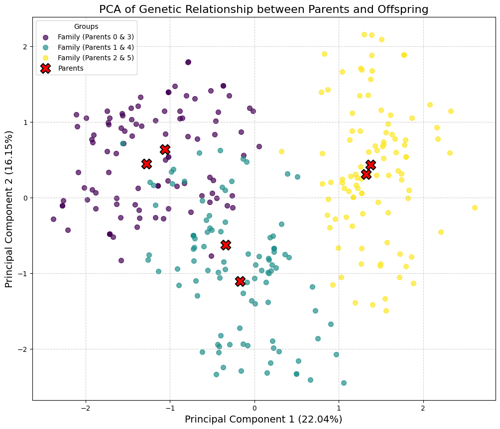

import jaximport jax.numpy as jnp# Assuming these are the locations of your modulesfrom chewc.population import msprime_popfrom chewc.sp import SimParamfrom chewc.trait import add_trait_a, _calculate_gvs_vectorizedfrom chewc.phenotype import set_phenoimport numpy as np# JAX random key setupkey = jax.random.PRNGKey(42)key, pop_key, trait_key = jax.random.split(key, 3)# 1. Generate the founder population and its genetic map together.founder_pop, genetic_map = msprime_pop( key=pop_key, n_ind=6, n_loci_per_chr=1000, n_chr=1, ploidy=2)# 2. Use the founder population and its map to configure the simulation's rules.SP = SimParam.from_founder_pop( founder_pop=founder_pop, gen_map=genetic_map, sexes="no")# 3. Add two additive traits with a negative genetic correlation.# Define trait means, variances, and the correlation matrixtrait_means = jnp.array([0.0, 0.0])trait_vars = jnp.array([1.0, 1.0])neg_cor_matrix = jnp.array([[1.0, 0.6], [0.6, 1.0]])# Call the function to add the traitsSP = add_trait_a( key=trait_key, founder_pop=founder_pop, sim_param=SP, n_qtl_per_chr=500, mean=trait_means, var=trait_vars, cor_a=neg_cor_matrix)# Split the JAX key for two separate phenotyping operationskey = jax.random.PRNGKey(42) # A fresh key for this blockkey, h2_key, varE_key = jax.random.split(key, 3)# --- Example 1: Phenotyping with Heritability (h2) ---# Define the narrow-sense heritability for each traitheritabilities = jnp.array([0.3, 0.6])# Call the JIT-compiled set_pheno function using the h2 argumentpop_with_h2 = set_pheno( key=h2_key, pop=founder_pop, traits=SP.traits, ploidy=SP.ploidy, h2=heritabilities)# --- Verification (Optional) ---# Calculate genetic values for the new traits in the founder populationbvs,gvs = _calculate_gvs_vectorized(founder_pop, SP.traits, SP.ploidy)print(np.mean(gvs[:,1]))print(np.var(gvs[:,1]))print(np.mean(pop_with_h2.gv[:,1]))print(np.var(pop_with_h2.gv[:,1]))
WARNING:2025-08-24 15:14:52,626:jax._src.xla_bridge:794: An NVIDIA GPU may be present on this machine, but a CUDA-enabled jaxlib is not installed. Falling back to cpu.
6.357829e-07
1.0000006
6.357829e-07
1.0000006
import jaximport jax.numpy as jnp# Assuming these are the locations of your modulesfrom chewc.population import msprime_pop, Populationfrom chewc.sp import SimParamfrom chewc.trait import add_trait_a, _calculate_gvs_vectorized, TraitCollectionfrom chewc.phenotype import set_phenofrom chewc.cross import make_crossimport numpy as npfrom functools import partialfrom jaxtyping import Array, Float# JAX random key setupkey = jax.random.PRNGKey(42)key, pop_key, trait_key = jax.random.split(key, 3)# 1. Generate the founder population and its genetic map together.founder_pop, genetic_map = msprime_pop( key=pop_key, n_ind=6, n_loci_per_chr=10, n_chr=2, ploidy=2)# 2. Use the founder population and its map to configure the simulation's rules.SP = SimParam.from_founder_pop( founder_pop=founder_pop, gen_map=genetic_map, sexes="no")# 3. Add two additive traits with a negative genetic correlation.# Define trait means, variances, and the correlation matrixtrait_means = jnp.array([0.0, 0.0])trait_vars = jnp.array([1.0, 1.0])neg_cor_matrix = jnp.array([[1.0, 0.6], [0.6, 1.0]])# Call the function to add the traitsSP = add_trait_a( key=trait_key, founder_pop=founder_pop, sim_param=SP, n_qtl_per_chr=10, mean=trait_means, var=trait_vars, cor_a=neg_cor_matrix)# Split the JAX key for two separate phenotyping operationskey = jax.random.PRNGKey(42) # A fresh key for this blockkey, h2_key, varE_key = jax.random.split(key, 3)# --- Example 1: Phenotyping with Heritability (h2) ---# Define the narrow-sense heritability for each traitheritabilities = jnp.array([0.3, 0.6])# Call the JIT-compiled set_pheno function using the h2 argumentpop_with_h2 = set_pheno( key=h2_key, pop=founder_pop, traits=SP.traits, ploidy=SP.ploidy, h2=heritabilities)# --- Verification (Optional) ---# Calculate genetic values for the new traits in the founder populationbvs,gvs = _calculate_gvs_vectorized(founder_pop, SP.traits, SP.ploidy)print("--- Founder Population Verification ---")print(f"Mean GV (Trait 2, pre-pheno): {np.mean(gvs[:,1]):.4f}")print(f"Var GV (Trait 2, pre-pheno): {np.var(gvs[:,1]):.4f}")print(f"Mean GV (Trait 2, post-pheno): {np.mean(pop_with_h2.gv[:,1]):.4f}")print(f"Var GV (Trait 2, post-pheno): {np.var(pop_with_h2.gv[:,1]):.4f}")# ===================================================================# --- EXTENSION: Pick 3 random pairs and make 20 offspring per cross ---# ===================================================================print("\n--- Starting Breeding Extension ---")# A new key for this entire breeding operationkey, breeding_key = jax.random.split(key)# 1. Define breeding parametersn_pairs =3n_offspring_per_pair =100n_parents_to_select = n_pairs *2total_offspring = n_pairs * n_offspring_per_pair# 2. Select 6 unique parents without replacement from the founder population# We use their internal IDs (iids), which are 0-99 for the founder pop.select_key, cross_key, pheno_key = jax.random.split(breeding_key, 3)parent_indices = jax.random.choice( select_key, pop_with_h2.nInd, # Choose from all individuals (0 to 99) shape=(n_parents_to_select,), replace=False)print(f"Selected parent indices (iids): {parent_indices}")# 3. Form the cross plan# Reshape the 6 parent indices into 3 pairs of (mother, father)# The `make_cross` function is vectorized, so we create a plan where each# row represents one desired offspring.pairs = parent_indices.reshape((n_pairs, 2))print(f"Formed pairs (mother iid, father iid): \n{pairs}")# Repeat each pair `n_offspring_per_pair` times to create the full cross plan# This will result in a (60, 2) array.cross_plan = jnp.repeat(pairs, repeats=n_offspring_per_pair, axis=0)print(f"Shape of the final cross plan: {cross_plan.shape}")# 4. Execute the crosses to create progeny# The `make_cross` function generates the genotypes and pedigree info.# Note: The returned population will have placeholder values for bv, gv, pheno.progeny_pop_no_values = make_cross( key=cross_key, pop=pop_with_h2, cross_plan=cross_plan, sp=SP, next_id_start=SP.last_id # Start new IDs after the founders (e.g., at 100))print(f"\nCreated a new progeny population (without phenotypes yet):")print(progeny_pop_no_values)print(f"Progeny IDs range from {progeny_pop_no_values.id[0]} to {progeny_pop_no_values.id[-1]}")print(f"First offspring's mother ID: {progeny_pop_no_values.mother[0]}, father ID: {progeny_pop_no_values.father[0]}")# 5. Calculate genetic values and phenotypes for the new progeny# We use the same heritabilities as the founder generation.final_progeny_pop = set_pheno( key=pheno_key, pop=progeny_pop_no_values, traits=SP.traits, ploidy=SP.ploidy, h2=heritabilities)print(f"\nFinal progeny population (with phenotypes calculated):")print(final_progeny_pop)# 6. Verification# Check the mean and variance of the genetic values for the second trait in the new generation.# Due to random mating and Mendelian sampling, these values should be similar but not# identical to the parent generation.progeny_gv_mean_t2 = jnp.mean(final_progeny_pop.gv[:, 1])progeny_gv_var_t2 = jnp.var(final_progeny_pop.gv[:, 1])print(f"\nVerification of progeny population (Trait 2):")print(f"Mean Genetic Value: {progeny_gv_mean_t2:.4f}")print(f"Variance of Genetic Value: {progeny_gv_var_t2:.4f}")
--- Founder Population Verification ---
Mean GV (Trait 2, pre-pheno): -0.0000
Var GV (Trait 2, pre-pheno): 1.0000
Mean GV (Trait 2, post-pheno): -0.0000
Var GV (Trait 2, post-pheno): 1.0000
--- Starting Breeding Extension ---
Selected parent indices (iids): [3 0 1 4 5 2]
Formed pairs (mother iid, father iid):
[[3 0]
[1 4]
[5 2]]
Shape of the final cross plan: (300, 2)
Created a new progeny population (without phenotypes yet):
Population(nInd=300, nTraits=2, has_ebv=No)
Progeny IDs range from 6 to 305
First offspring's mother ID: 3, father ID: 0
Final progeny population (with phenotypes calculated):
Population(nInd=300, nTraits=2, has_ebv=No)
Verification of progeny population (Trait 2):
Mean Genetic Value: 0.0109
Variance of Genetic Value: 5.8896
import matplotlib.pyplot as pltfrom sklearn.decomposition import PCAimport numpy as np # Using numpy for some data manipulation for plotting# ===================================================================# --- PCA Visualization of Offspring and Parents ---# ===================================================================print("\n--- Performing PCA and Visualizing Results ---")# 1. Prepare the data for PCA# Get the dosage matrix for the parents from the original populationparent_dosage = pop_with_h2.dosage[parent_indices]# Get the dosage matrix for all the offspringoffspring_dosage = final_progeny_pop.dosage# Combine them into a single matrix. Parents will be the first 6 rows.combined_dosage = jnp.vstack([parent_dosage, offspring_dosage])print(f"Shape of combined dosage matrix for PCA: {combined_dosage.shape}")# 2. Perform PCA# We want to find the first 2 principal componentspca = PCA(n_components=2)principal_components = pca.fit_transform(combined_dosage)# Explained variance helps understand how much information each PC capturesexplained_variance = pca.explained_variance_ratio_print(f"Explained variance by PC1: {explained_variance[0]:.2%}")print(f"Explained variance by PC2: {explained_variance[1]:.2%}")# 3. Separate the results for plottingpc_parents = principal_components[:n_parents_to_select]pc_offspring = principal_components[n_parents_to_select:]# 4. Create family labels for color-coding the offspring# We can create a unique ID for each family based on the sorted parent IDsoffspring_mothers = np.array(final_progeny_pop.mother)offspring_fathers = np.array(final_progeny_pop.father)# Create a unique, sorted tuple for each family pair to handle (A,B) vs (B,A)family_pairs = [tuple(sorted(pair)) for pair inzip(offspring_mothers, offspring_fathers)]unique_families =sorted(list(set(family_pairs)))# Create a color map for the familiescolors = plt.cm.viridis(np.linspace(0, 1, len(unique_families)))family_color_map = {family: color for family, color inzip(unique_families, colors)}# Assign a color to each offspringoffspring_colors = [family_color_map[family] for family in family_pairs]# 5. Generate the plotfig, ax = plt.subplots(figsize=(12, 10))# Plot the offspring, color-coded by family# We plot each family separately to create a clean legendfor i, family inenumerate(unique_families):# Find which offspring belong to this family family_mask = [fp == family for fp in family_pairs] ax.scatter( pc_offspring[family_mask, 0], pc_offspring[family_mask, 1], color=colors[i], label=f'Family (Parents {family[0]} & {family[1]})', alpha=0.7, s=50 )# Plot the parents with special markersax.scatter( pc_parents[:, 0], pc_parents[:, 1], marker='X', color='red', s=200, edgecolor='black', linewidth=1.5, label='Parents', zorder=10# Ensure parents are plotted on top)# Add labels and titleax.set_xlabel(f'Principal Component 1 ({explained_variance[0]:.2%})', fontsize=14)ax.set_ylabel(f'Principal Component 2 ({explained_variance[1]:.2%})', fontsize=14)ax.set_title('PCA of Genetic Relationship between Parents and Offspring', fontsize=16)ax.legend(title="Groups")ax.grid(True, linestyle='--', alpha=0.6)plt.show()
--- Performing PCA and Visualizing Results ---
Shape of combined dosage matrix for PCA: (306, 20)
Explained variance by PC1: 22.04%
Explained variance by PC2: 16.15%

import numpy as npimport matplotlib.pyplot as plt# ===================================================================# --- Heatmap of Genotype Correlations (Genomic Relationship Matrix) ---# ===================================================================print("\n--- Creating Heatmap of Genotype Correlations ---")# 1. Calculate the correlation matrix between individuals# The `combined_dosage` matrix is already in the shape (n_individuals, n_loci).# np.corrcoef calculates the correlation between rows, which is exactly what we want:# an (n_individuals, n_individuals) matrix.# Note: This differs from the R example where a transpose was needed.# np.corrcoef treats rows as variables, whereas R's cor() treats columns as variables.ind_correlation_matrix = np.corrcoef(combined_dosage)print(f"Shape of the resulting correlation matrix: {ind_correlation_matrix.shape}")print("Top-left 5x5 corner of the matrix (parent-parent correlations):")print(np.round(ind_correlation_matrix[:5, :5], 4))# 2. Prepare for plotting: Define group boundaries and labels# We have one group of parents and three family groups.group_sizes = [n_parents_to_select] + [n_offspring_per_pair] * n_pairsgroup_labels = ['Parents'] + [f'Family {i+1}'for i inrange(n_pairs)]# Calculate the positions for the dividing lines (at the end of each group)# The -0.5 is to place the line neatly between the pixels of the heatmap.boundaries = np.cumsum(group_sizes)[:-1] -0.5# Calculate the positions for the labels (in the middle of each group)tick_positions = np.cumsum(group_sizes) - np.array(group_sizes) /2# 3. Generate the plotfig, ax = plt.subplots(figsize=(12, 10))# Use imshow to create the heatmap# We use the 'RdYlBu_r' colormap which is a reversed Red-Yellow-Blue palette.# Red = high positive correlation (high relatedness)# Blue = high negative correlation (unrelated)# Yellow = zero correlationim = ax.imshow(ind_correlation_matrix, cmap='RdYlBu_r', vmin=-1, vmax=1, interpolation='nearest', origin='upper')# Add a colorbar to show the correlation scalecbar = fig.colorbar(im, ax=ax)cbar.set_label("Genomic Correlation", rotation=270, labelpad=20, fontsize=12)# Add the dividing lines between groupsfor pos in boundaries: ax.axhline(pos, color='black', linewidth=1.5) ax.axvline(pos, color='black', linewidth=1.5)# Set the ticks and labels for both axesax.set_xticks(tick_positions)ax.set_xticklabels(group_labels, rotation=45, ha="right")ax.set_yticks(tick_positions)ax.set_yticklabels(group_labels)# Add title and labelsax.set_title("Heatmap of Genomic Resemblance Between Individuals", fontsize=16)ax.set_xlabel("Individuals", fontsize=12)ax.set_ylabel("Individuals", fontsize=12)plt.tight_layout()plt.show()
--- Creating Heatmap of Genotype Correlations ---
Shape of the resulting correlation matrix: (306, 306)
Top-left 5x5 corner of the matrix (parent-parent correlations):
[[1. 0.4415 0.3224 0.4223 0.425 ]
[0.4415 1. 0.6506 0.606 0.2919]
[0.3224 0.6506 1. 0.2796 0.3001]
[0.4223 0.606 0.2796 1. 0.4013]
[0.425 0.2919 0.3001 0.4013 1. ]]